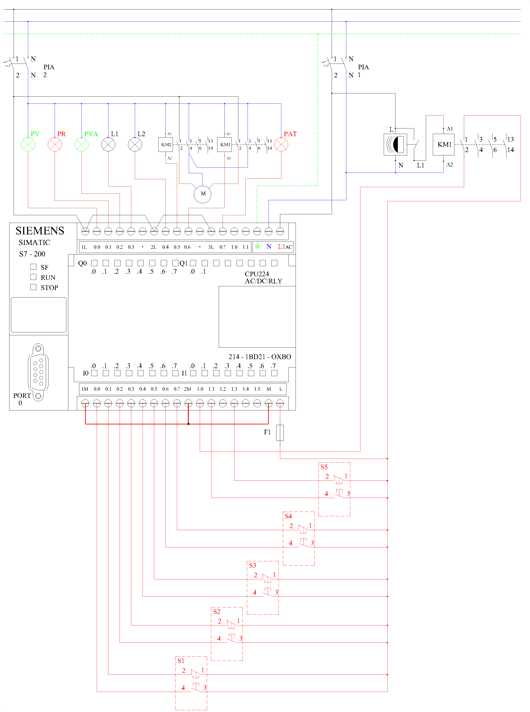

6.- Instalación domótica de vivienda
1. Asignación de señales en el autómata programable.
- I0.0: Pulsador marcha (S1) — contacto NO.
- I0.1: Pulsador paro (S1) — contacto NC.
- I0.2: Pulsador marcha (S2) — contacto NO.
- I0.3: Pulsador paro (S2) — contacto NC.
- I0.4: Pulsador marcha (S3) — contacto NO.
- I0.5: Pulsador paro (S3) — contacto NC.
- I0.6: Pulsador marcha (S4) — contacto NO. Subir persiana.
- I0.7: Pulsador paro (S4) — contacto NC. Final de carrera de subida.
- I1.0: Detector de movimiento (DM) — contacto del contactor KM1.
- I1.1: Pulsador marcha (S5) — contacto NO. Bajar persiana.
- I1.3: Pulsador paro (S5) — contacto NC. Final de carrera de bajada.
- Q0.0: Piloto verde (PV).
- Q0.1: Piloto rojo (PR).
- Q0.2: Piloto verde alarma (PVA).
- Q0.3: Lámpara de alarma (L1).
- Q0.4: Lámpara del detector (L2).
- Q0.5: Contactor KM2 — subir persiana.
- Q0.6: Contactor KM3 — bajar persiana.
- Q0.7: Piloto de alarma técnica (PAT) — salida 8.
- V200.0: Señal de alarmas técnicas — bit escrito por red desde el segundo LOGO!.
Entradas digitales
Salidas digitales
Entrada de red
2. Programa en Ladder (S7-200)
| Bloque / Segmento | Lógica | Función |
|---|---|---|
| Segm. 1 | I0.0 → S M0.0 (1) | /I0.1 → R M0.0 (1) | Memoria de circuito activado |
| Segm. 2 | M0.0 → Q0.0 | /M0.0 → Q0.1 | Piloto verde / piloto rojo |
| Segm. 3–7 | Igual que en la práctica 5 (T37 de 5 s, T38 de 60 s, telerruptor M0.1, minuto M0.3) | Funciones de S2 sobre L2 |
| Segm. 8 | M0.0 · (I1.0 + M0.1 + M0.3) → Q0.4 | Lámpara L2: detector o S2 |
| Segm. 9–12 | Igual que en la práctica 5 (telerruptor M0.4, enclavamiento M0.5) | Activación de la alarma con S3 y disparo de la alarma (M0.5) |
| Segm. 12 bis | M0.5 + M2.0 → Q0.3 | Lámpara L1: disparo de la alarma o simulación de presencia |
| Segm. 13 | M0.0 · I0.6 · /Q0.6 → S M1.0 | /I0.7 + /M0.0 → R M1.0 | Subida de la persiana hasta el final de carrera S4 |
| Segm. 14 | M0.0 · I1.1 · /Q0.5 → S M1.1 | /I1.3 + /M0.0 → R M1.1 | Bajada de la persiana hasta el final de carrera S5 |
| Segm. 15 | M1.0 · /Q0.6 → Q0.5 | M1.1 · /Q0.5 → Q0.6 | Subir / bajar con enclavamiento mutuo |
| Segm. 16 | SM0.0 → READ_RTC (TODR) T = VB100 | Lee el reloj del autómata: VB101 mes, VB102 día, VB103 hora (en BCD) |
| Segm. 17 | VB101 = 16#07 · VB102 ≥ 16#01 · VB102 ≤ 16#15 · VB103 = 16#10 → M2.0 | Simulación de presencia: 1–15 de julio, de 10:00 a 10:59 |
| Segm. 18 | V200.0 · SM0.5 → Q0.7 | Alarma técnica: PAT intermitente (SM0.5 = 1 Hz) mientras llegue la señal |
Antes de usar la simulación de presencia hay que poner en hora el reloj del S7-200 desde STEP 7-Micro/WIN (CPU → Ajustar reloj). Los valores de fecha y hora se comparan en BCD (16#…), que es el formato en que los entrega READ_RTC.
Comunicación con el LOGO!: la CPU 224 no tiene puerto Ethernet, así que para recibir la alarma técnica por red necesita el módulo de comunicación CP 243-1. El segundo LOGO! escribe el bit V200.0 del S7-200 mediante una conexión S7 configurada en LOGO!Soft Comfort.
3. Esquema
Esquema multifilar de la práctica 6.

×